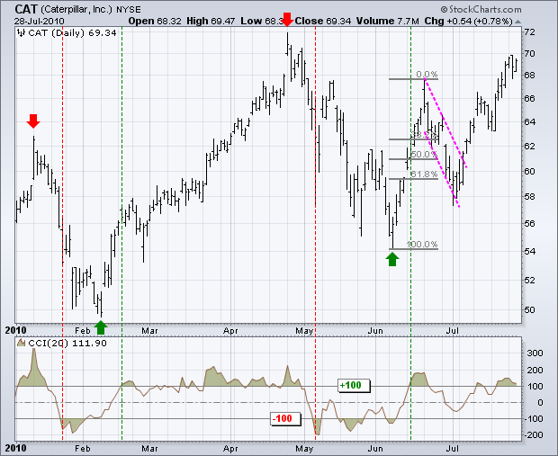
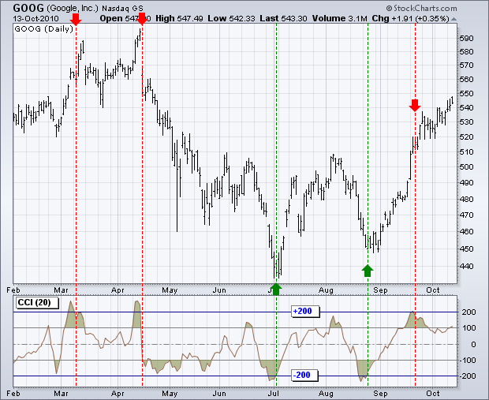
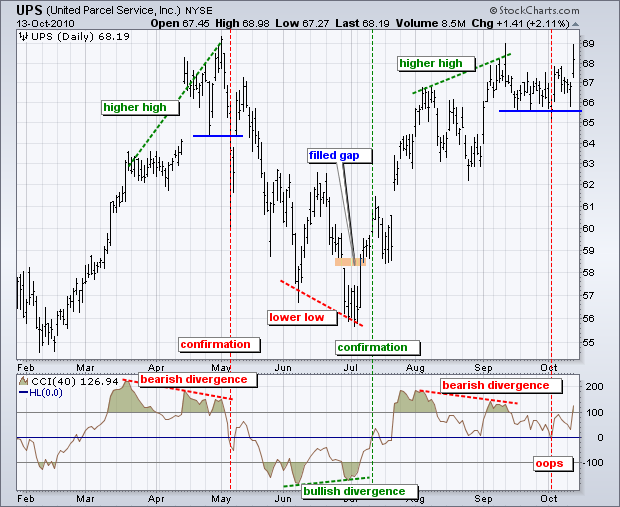

Developed by Donald Lambert and featured in Commodities magazine in 1980, the Commodity Channel Index (CCI) is a versatile indicator that can be used to identify a new trend or warn of extreme conditions. Lambert originally developed CCI to identify cyclical turns in commodities, but the indicator can successfully applied to indices, ETFs, stocks and other securities. In general, CCI measures the current price level relative to an average price level over a given period of time. CCI is relatively high when prices are far above their average. CCI is relatively low when prices are far below their average. In this manner, CCI can be used to identify overbought and oversold levels.
The example below is based on a 20-period Commodity Channel Index (CCI) calculation. The number of CCI periods is also used for the calculations of the simple moving average and Mean Deviation.
CCI = (Typical Price - 20-period SMA of TP) / (.015 x Mean Deviation) Typical Price (TP) = (High + Low + Close)/3 Constant = .015 There are four steps to calculating the Mean Deviation. First, subtract the most recent 20-period average of the typical price from each period's typical price. Second, take the absolute values of these numbers. Third, sum the absolute values. Fourth, divide by the total number of periods (20).
CCI measures the difference between a security's price change and its average price change. High positive readings indicate that prices are well above their average, which is a show of strength. Low negative readings indicate that prices are well below their average, which is a show of weakness.
The Commodity Channel Index (CCI) can be used as either a coincident or leading indicator. As a coincident indicator, surges above +100 reflect strong price action that can signal the start of an uptrend. Plunges below -100 reflect weak price action that can signal the start of a downtrend.
As a leading indicator, chartists can look for overbought or oversold conditions that may foreshadow a mean reversion. Similarly, bullish and bearish divergences can be use to detect early momentum shifts and anticipate trend reversals.
As noted above, the majority of CCI movement occurs between -100 and +100. A move that exceeds this range shows unusual strength or weakness that can foreshadow an extended move. Think of these levels as bullish or bearish filters. Technically, CCI favors the bulls when positive and the bears when negative. However, using a simple zero line crossovers can result in many whipsaws. Although entry points will lag more, requiring a move above +100 for a bullish signal and a move below -100 for a bearish signal reduces whipsaws.
The chart below shows Caterpillar (CAT) with 20-day CCI. There were four trend signals within a seven month period. Obviously, a 20-day CCI is not suited for long-term signals. Chartists need to use weekly or monthly charts for long-term signals. The stock peaked on 11-Jan and turned down. CCI moved below -100 on 22-January (8 days later) to signal the start of an extended move. Similarly, the stock bottomed on 8-February and CCI moved above +100 on 17-February (6 days later) to signal the start of an extended advance. CCI does not catch the exact top or bottom, but it can help filter out insignificant moves and focus on the larger trend.

CCI triggered a bullish signal when CAT surged above 60 in June. Some traders may have considered the stock overbought and the reward-to-risk ratio unfavorable at these levels. With the bullish signal in force, focus would have been on bullish setups with a good reward-to-risk ratio. Notice that the stock retraced around 62% of the prior advance and formed a falling flag by the end of June. The subsequent surge above the flag trend line provided another bullish signal with CCI still in bull mode.
Identifying overbought and oversold levels can be tricky with the Commodity Channel Index (CCI), or any other momentum oscillator for that matter. First, CCI is an unbound oscillator. Theoretically, there are no upside or downside limits. This makes an overbought or oversold assessment subjective. Second, securities can continue moving higher after an indicator becomes overbought. Likewise, securities can continue moving lower after an indicator becomes oversold.
The definition of overbought or oversold varies for the Commodity Channel Index (CCI). ±100 may work in a trading range, but more extreme levels are needed for other situations. ±200 is a much harder level to reach and more representative of a true extreme. Selection of overbought/oversold levels also depends on the volatility of the underlying security. The CCI range for an index ETF, such as SPY, will be usually be smaller than for a most stocks, such as Google.

The chart above shows Google (GOOG) with CCI(20). Horizontal lines at ±200 were added using the advanced indicators options. From early February to early October (2010), Google exceeded ±200 at least five times. The red dotted lines show when CCI moved back below +200 and the green dotted lines show when CCI moved back above -200. It is important to wait for these crosses to reduce whipsaws should the trend extend. Such a system is not fool proof though. Notice how Google kept on moving higher even after CCI became overbought in mid September and moved below -200.
Divergences signal a potential reversal point because directional momentum does not confirm price. A bullish divergence occurs when the underlying security makes a lower low and CCI forms a higher low, which shows less downside momentum. A bearish divergence forms when the security records a higher high and CCI forms a lower high, which shows less upside momentum. Before getting too excited about divergences as great reversal indicators, note that divergences can be misleading in a strong trend. A strong uptrend can show numerous bearish divergences before a top actually materializes. Conversely, bullish divergences often after appear in extended downtrends.
Confirmation holds the key to divergences. While divergences reflect a change in momentum that can foreshadow a trend reversal, chartists should set a confirmation point for CCI or the price chart. A bearish divergence can be confirmed with a break below zero in CCI or a support break on the price chart. Conversely, a bullish divergence can be confirmed with a break above zero in CCI or a resistance break on the price chart.

The chart above shows United Parcel Service (UPS) with 40-day CCI. A longer timeframe, 40 versus 20, was used to reduce volatility. There are three sizable divergences over a seven month period, which is actually quite a few for just seven months. First, UPS raced to new highs in early May, but CCI failed to exceed its March high and formed a bearish divergence. A support break on the price chart and CCI move into negative territory to0 confirm this divergence a few days later. Second, a bullish divergence formed in early July as the stock moved to a lower low, but CCI formed a higher low. This divergence was confirmed with a CCI break into positive territory. Also notice that UPS filled the late June gap with a surge in early July. Third, a bearish divergence formed in early September and this was confirmed when CCI dipped into negative territory. Despite a CCI confirmation, price never broke support and the divergence did not result in a trend reversal. Not all divergences produce good signals.
CCI is a versatile momentum oscillator that can be used to identify overbought/oversold levels or trend reversals. The indicator becomes overbought or oversold when it reaches a relative extreme. That extreme depends on the characteristics of the underlying security and the historical range for CCI. Volatile securities are likely to require greater extremes than docile securities. Trend changes can be identified when CCI crosses a specific threshold between zero and 100. Regardless of how CCI is used, chartists should use CCI in conjunction with other indicators or price analysis.